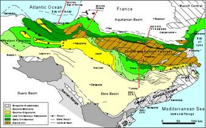
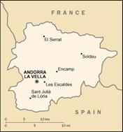
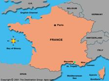
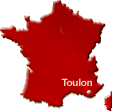

Chapter 10 Annotations

Chapter 10
Scott Kessler
The Teacher
Church of Saint - Sulpice
The Brotherhood
Opus Dei
Corporal Mortification
Pyrenees
Andorra
Suzerain
Marseilles
Offertory Money
Obra de Dios
The Book of Acts
Black Audi Acronym standing for Auto Union Deutschland Ingolstadt. This German car manufacturer is known for luxury cars. Its parent company is the larger Nissan.

The Teacher This anonymous figure is the one who is directing Silas as well as Bishop Aringarosa. He seems to have unlimited resources as well as knowledge that only people in very elite circles should know.
Church of Saint-Sulpice Also under “Eglise Saint-Sulpice.” See Chapter 3
The Brotherhood See Chapter 3
Keystone 1. a. The stone at the summit of an arch, which, being the last put in, is looked upon as locking the whole together. b. fig. Something occupying a position compared to that of a keystone in an arch. c. esp. The central principle of a system, course of action, etc., upon which all the rest depends.
Opus Dei See Chapter 7
Place Saint-Sulpice The Plaza surrounding the Church of Saint – Sulpice.
Corporal Mortification See chapter 7
Pyrenees The Pyrenees are the mountains which divide France and Spain. The French mountains are humid and green, while the Spanish side of the border is quite arid.

http://search.eb.com/eb/article?tocId=9106060&query=pyrenees&ct=
Andorra – A European co-principality surrounded by France and Spain. It is situated on the slopes of the Pyrenees mountain chain.

http://search.eb.com/eb/article?tocId=9007461&query=andorra&ct=
Suzerain A feudal overlord. In recent use, with reference to international relations, a sovereign or a state having supremacy over another state which possesses its own ruler or government but cannot act as an independent power. http://dictionary.oed.com/cgi/entry/00243758?single=1&query_type=word&queryword=suzerain&edition=2e&first=1&max_to_show=10
Marseilles One of the fastest growing areas in France. It serves as a major port for the area as well as a center for the province. It is known for its ancient looking architecture.

http://search.eb.com/eb/article?tocId=9108484&query=marseilles&ct=eb
Toulon This is another port town located near Marseilles. It contains France’s principal naval base. The town contains the cathedral of Sainte-Marie Majeure.

http://search.eb.com/eb/article?tocId=9073043&query=toulon&ct=eb
Offertory money 2. Christian Church. The part of the
Eucharist, usually following the readings and the Creed, during which the
offerings of the congregation (orig. and spec. bread and wine) are
placed on the altar and any collection is taken; the making of offerings or
the things offered during the Eucharist. (Now the usual sense.) An act of
offering something, esp. to God or a divinity; (also) the thing offered.
http://dictionary.oed.com/cgi/entry/00330441?single=1&query_type=word&queryword=offertory&edition=3e&first=1&max_to_show=10
Obra de Dios – “God’s Work” refers to Opus Dei.
The Book of Acts The fifth book of the New Testament. The greater part of this book tells of the actions of the apostles of Christ. It is also known as The Acts of the Apostles.
http://www.newadvent.org/cathen/01117a.htm